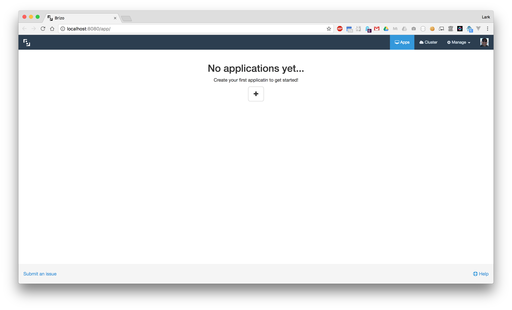
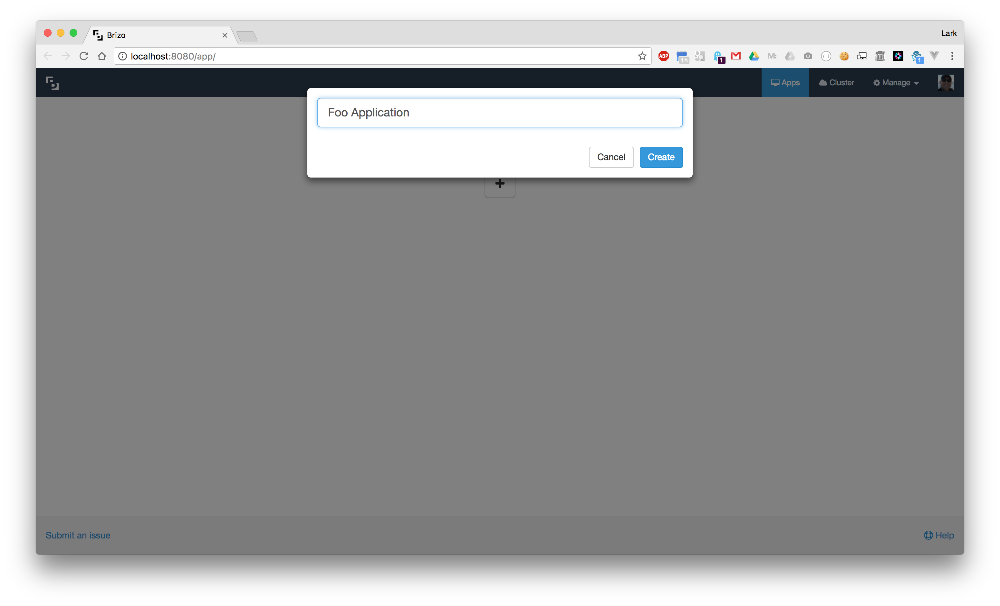

<div class="help-index">
  <div class="container-fluid">
    <div class="row">
      <div class="col-md-6 col-md-offset-3">
        <a [routerLink]="['/help']">&laquo; Back to Help</a>
        <h3>Applications</h3>
        <hr />
        <p>In Brizo, an application is the main object. Each application will hold information about it's environments, versions, containers, and volumes.</p>
        <br />
        <h4>Create Application</h4>
        <p>When you first launch Brizo there will be no applications. You should see the screen below:</p>
        
        <p>To create your first application, click the <b>+</b> button, and a modal will display asking you to name your new application.</p>
        
        <p>Once your application is created you will be redirected to the new application's details page. You should see a "No environments message" since you have not yet created any environments for your application.</p>
        
        <p>Next step is to <a [routerLink]="['/help/environments']">create an environment &raquo;</a></p>
      </div>
    </div>
  </div>
</div>